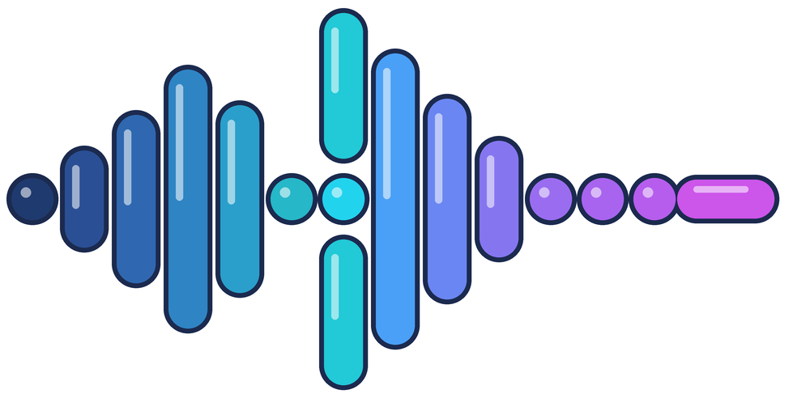

SayMorse
Tu voz en puntos y rayas
Tu mensaje
Usa puntos (.), rayas (-), un espacio entre letras y una barra / entre palabras.
Micrófono apagado
Texto
Morse
Código Morse
Ajustes de sonido
Conexión con Arduino (Bluetooth)
Conecta tu módulo Bluetooth para que el LED y el zumbador del Arduino se enciendan y suenen igual que la luz de la página.
Arduino desconectado
Diccionario Morse
Toca una letra o un número para oírlo.
Letras
Números
Un punto dura una unidad y una raya, tres. Entre las señales de una misma letra hay una unidad de silencio, tres entre letras y siete entre palabras. Las tildes se transmiten sin acento y la Ñ tiene su propio código (--.--).